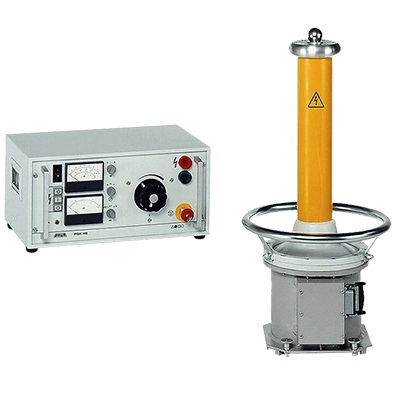
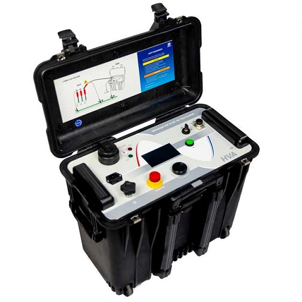
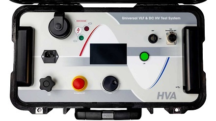
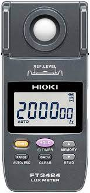
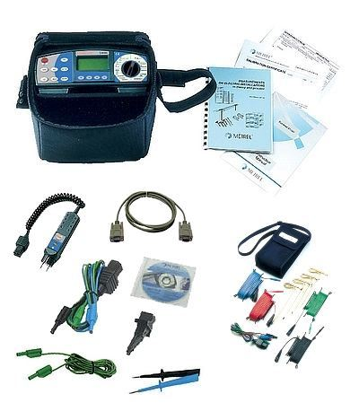
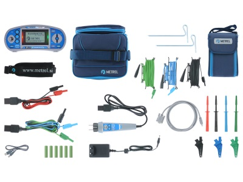
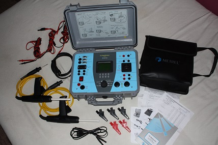
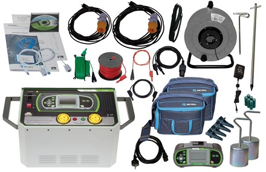
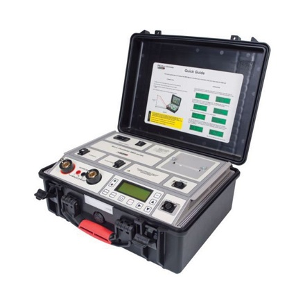
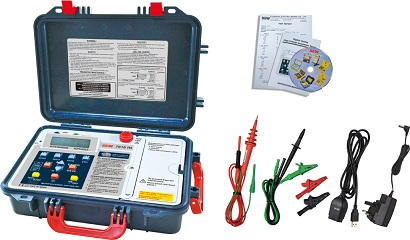

Belgrade office · +381 (0)11 2776 988
ENSR
TERMOELEKTRO ENEL AD operates its own accredited electrical testing laboratory and can perform final testing and issue certification directly — no external subcontractor required for the standard electrical testing scope.
This certificate, issued by the Accreditation Body of Serbia (ATS) under the international ISO/IEC 17025 competence standard, is independent, government-recognized confirmation that our laboratory is technically qualified to reliably and impartially perform the tests listed below.
Each method is performed under its corresponding Serbian regulation / SRPS standard, accredited by the Accreditation Body of Serbia (ATS).
Of the 53 instruments in the laboratory’s full equipment register, a specific 9-instrument subset is used under the accredited scope itself — view that equipment list ↗.
Download accreditation certificate (No. 01-459) ↗Not part of the ATS-accredited scope (Certificate No. 01-459)
Beyond its accredited scope, the laboratory also performs testing on the following equipment as an additional service.
A sample of the instruments used by the laboratory in the field and on site.

AC/DC high-voltage test set PGK 70HB (BAUR)
Universal VLF & DC HV test system (HVA)
Universal VLF & DC HV test system (HVA) — control panel
Lux meter FT3424 (Hioki)
Multi-function installation tester kit (Metrel)
Compact installation tester kit (Metrel)
Earth resistance / loop tester kit (Metrel)
Earth & soil resistivity test kit (Metrel)
Portable test set in rugged case
Portable multi-function tester kit